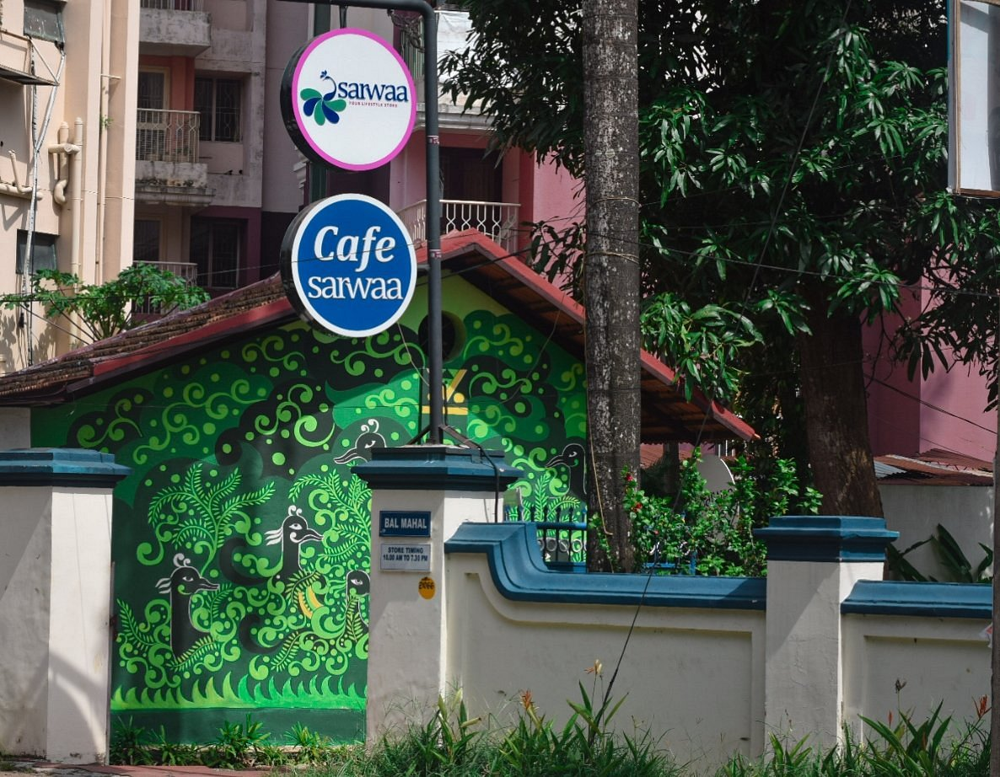

Cafe Sarwaa is a popular, women-led aesthetic cafe and lifestyle brand in Kerala with standout locations in Thiruvananthapuram and Varkala. Thiruvananthapuram Location • Address: Bal Mahal, opposite All India Radio, DPI Road, Vazhuthacaud, Thiruvananthapuram, Kerala 695014 • Hours: Open daily from 10:00 AM to 12:00 AM • Atmosphere: A peaceful, open-air terrace setup connected to a lifestyle and handicrafts boutique, featuring antiques, soft music, and cozy green and bamboo seating. • Price Range: ₹200 to ₹400 for a typical meal. • Menu Highlights: Filter coffee, French toast, strawberry matcha, hot chocolate, pancakes, and an extensive array of vegetarian and vegan options. • Contact: +91 95622 90006
